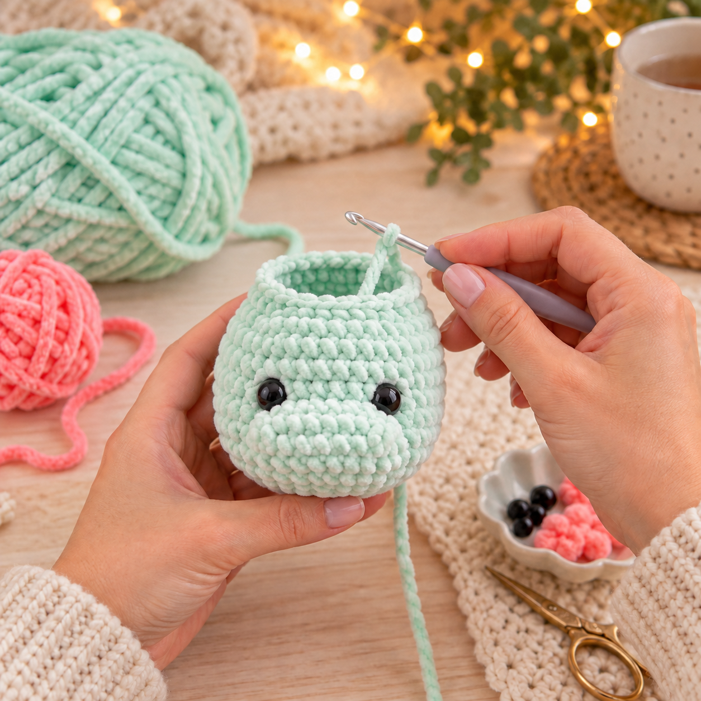
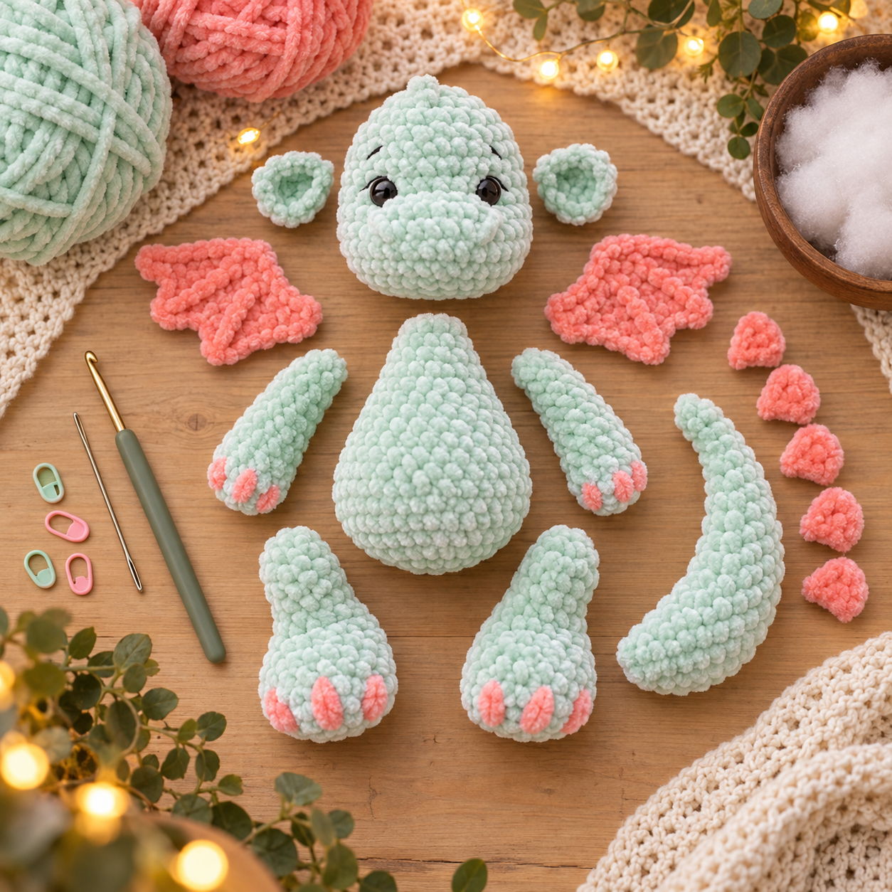
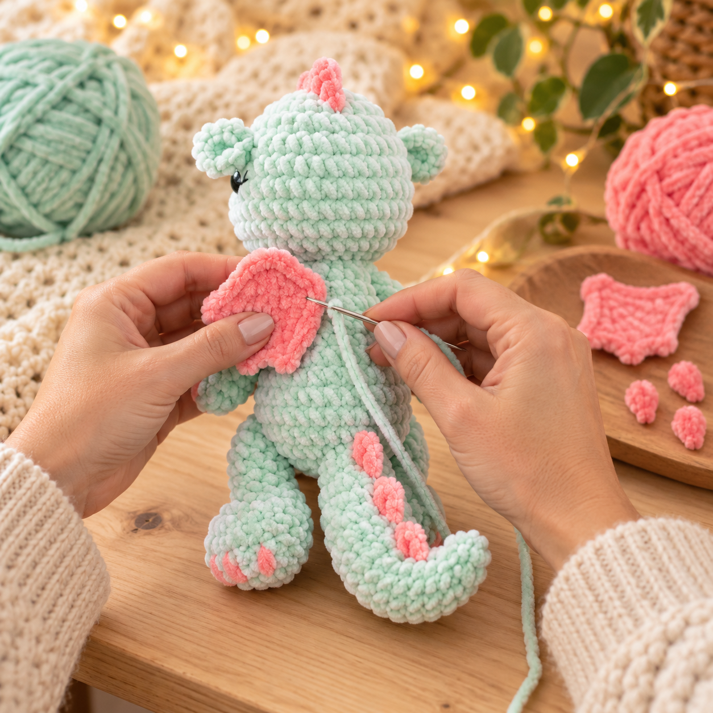

Afkortingen
- V = vaste
- MR = magische ring
- Hv = halve vaste
- L = losse
- S = steek of steken
- L-boog = lossenketting
- 2 V samen: minderen: twee steken samenhaken
- (…) × 6: herhaal wat tussen de haakjes staat zes keer
- [12]: het totale aantal steken na de toer
Voor dat je begint
Haak eerst de vier poten en daarna het lijf. De poten worden tijdens
het haken rechtstreeks aan het lijf bevestigd. Je hoeft ze daardoor
achteraf niet vast te naaien. Wanneer je een poot aan het lijf haakt,
steek je de haaknaald zowel door de laatste toer van de poot als door
de steek van het lijf.
Wil je Vonkje aan een jong kind of je hond geven? Borduur de ogen dan
met zwart garen in plaats van veiligheidsogen te gebruiken.
De lussteek
De manen en het uiteinde van de staart worden gemaakt met lussteken.
- Trek het garen uit tot de gewenste lengte en vorm een lus.
- Houd de lus met je vingers op zijn plaats.
- Steek de haaknaald in dezelfde steek waaruit de lus komt.
- Sla de draad om de haaknaald en trek hem door de steek.
-
Sla de draad opnieuw om en trek deze door beide lussen op de
haaknaald.
- Herhaal dit voor de volgende lus.
Probeer alle lussen ongeveer even lang te maken. Zo krijgt Simba
mooie, volle manen.
Het patroon:
Hoofd
Haak met mintgroen garen.
- Toer 1: 6 v in een MR [6]/li>
- Toer 2: 6 meerd [12]
- Toer 3: (1 v, meerd) × 6 [18]
- Toer 4: (2 v, meerd) × 6 [24]
- Toer 5: (3 v, meerd) × 6 [30]
- Toer 6 tot en met 8: 30 v [30]
- Toer 9: 10 v, 6 meerd, 14 v [36]
- Toer 10 tot en met 12: 36 v [36]
- Toer 13: (4 v, mind) × 6 [30]
- Toer 14: (3 v, mind) × 6 [24]
- Toer 15: (2 v, mind) × 6 [18]
- Toer 16: (1 v, mind) × 6 [12]
- Toer 17: 6 mind [6]
Plaats de veiligheidsogen tussen toer 8 en 9, met ongeveer 6 steken
ruimte tussen de ogen.
Vul het hoofd stevig op. Knip de draad af, haal hem door de
overgebleven steken en trek de opening dicht. Werk het uiteinde weg.
Armen: maak er twee
Haak met mintgroen garen.
- Toer 1: 6 v in een MR [6]
- Toer 2: 6 meerd [12]
- Toer 3 en 4: 3–4. 12 v [12]
- TToer 5: 3 mind, 6 v [9]
- Toer 6 tot en met 12: 9 v [9]
Vul alleen het onderste deel van de arm licht op. Laat de bovenkant
leeg, zodat de arm soepel langs het lichaam valt.
Vouw de opening dubbel en haak met 4 v door beide zijden heen. Knip de
draad af en laat een uiteinde over als je de armen niet direct aan het
lichaam hebt meegehaakt.
Oren: maak er twee
Haak met mintgroen garen.
- Toer 1: 6 v in een MR [6]
- HToer 2: 6 meerd [12]
Knip de draad af en laat een lange draad over om het oor aan het hoofd
te naaien. Vul de oren niet op.
Staart
Haak met mintgroen garen.
- Toer 1: 6 v in een MR [6]
- Toer 2: 6 v [6]
- Toer 3: (1 v, meerd) × 3 [9]
- Toer 4: 9 v [9]
- Toer 5: (2 v, meerd) × 3 [12]/li>
- Toer 6: 12 v [12]
- Toer 7: (3 v, meerd) × 3 [15]
- Toer 8: (1 v, meerd) × 3, 9 v [18]
- Toer 9: (2 v, meerd) × 3, 4 v, meerd, 4 v [22]
Vul de staart geleidelijk en niet te stevig op. Knip de draad af en
laat een lange draad over om de staart aan het lichaam te naaien.

Benen: maak er twee
Haak met mintgroen garen.
- Toer 1: 6 v in een MR [6]
- Toer 2: 6 meerd [12]
- Toer 3: (1 v, meerd) × 6 [18]
- Toer 4: (5 v, meerd) × 3 [21]
- Toer 5 en 6: 21 v [21]
- Toer 7: 1 v, (1 v, mind) × 6, 2 v [15]
- Toer 8: 3 v, (1 v, mind) × 3, 3 v [12]
- Toer 9 tot en met 13:9–13. 12 v [12]
Vul de voet en het onderste gedeelte van het been stevig op. Vul het
bovenste gedeelte wat zachter.
Vouw de opening dubbel en haak met 5 v door beide zijden heen. De
benen worden tijdens het haken van het lichaam bevestigd.
Lichaam
Haak met mintgroen garen.
- Toer 1: 6 v in een MR [6]
- Toer 2: 6 meerd [12]
- Toer 3: (1 v, meerd) × 6 [18]
- Toer 4: (1 v, meerd) × 9 [27]
- Toer 5: (2 v, meerd) × 9 [36]
- Toer 6: 36 v [36]
-
Toer 7: 5 v door het eerste been en het lichaam, 12 v, 5 v door het
tweede been en het lichaam, 14 v [36]
- Toer 8: 36 v [36]
- Toer 9: (2 v, mind) × 9 [27]
- Toer 10: 27 v [27]
- Toer 11: (1 v, mind) × 9 [18]
- Toer 12 en 13:12–13. 18 v [18]
- Toer 14: (4 v, mind) × 3 [15]
-
Toer 15:1 v, 4 v door de eerste arm en het lichaam, 4 v, 4 v door de
tweede arm en het lichaam, 2 v [15]
Let bij het vasthaken van de benen en armen goed op hun positie. Door
verschillen in haakspanning kan het nodig zijn om het beginpunt iets
te verschuiven. Controleer voordat je ze vasthaakt of beide benen en
armen symmetrisch staan.
Vul het lichaam tijdens het haken stevig op. Knip na toer 15 de draad
af en laat een lange draad over om het hoofd vast te naaien.
Vleugels: maak er twee
Haak met koraalroze garen. De vleugels worden in heen en weergaande
rijen gehaakt.
- Haak 7 l. Keer om en haak 2 hst en 3 v [5]
- Haak 1 l, keer om, 5 v en vervolgens 3 l
- Keer om en haak 4 hst en 3 v [7]
- Haak 1 l, keer om, 7 v en vervolgens 2 l
- Keer om en haak 6 hst en 3 v [9]
Knip de draad af en laat een lange draad over om de vleugel aan de rug
te naaien.
Door de extra lossen aan het einde van rij 2 en 4 ontstaat de
trapsgewijze vorm van de vleugel.
Roze rugstekels
Hecht het koraalroze garen boven op het hoofd aan. Werk vanaf het
hoofd in een rechte lijn over de rug richting de staart.
Haak steeds 2 hst in dezelfde bevestigingsplaats om kleine, ronde
stekels te vormen. Verdeel de stekels gelijkmatig over het hoofd, de
rug en eventueel een gedeelte van de staart.
Knip de draad af en werk de uiteinden stevig weg.

Vonkje in elkaar zetten:
Gezicht
- Een klein neusje op het midden van de snuit
- Een kort wenkbrauwtje boven ieder oog
- Een of twee kleine wimpertjes aan de buitenkant van ieder oog
Werk alle uiteinden aan de achterkant van het hoofd weg.
Oren bevestigen
Speld de oren aan beide kanten van het hoofd vast. Controleer vanaf de
voorkant of ze op gelijke hoogte zitten. Naai ze met kleine steken
rondom stevig vast.
Hoofd bevestigen
Speld het hoofd midden op het lichaam. Controleer van voren en opzij
of het recht staat. Naai het hoofd stevig aan het lichaam. Voeg
voordat je de opening helemaal sluit eventueel nog wat extra vulling
toe aan de nek.
Staart bevestigen
Plaats het brede uiteinde van de staart onder aan de achterkant van
het lichaam. Laat de staart licht naar één kant buigen en naai hem
rondom stevig vast.
Vleugels bevestigen
Plaats de vleugels symmetrisch op de bovenkant van de rug. Laat de
punten iets naar buiten wijzen. Speld ze eerst vast en controleer de
positie voordat je ze langs de rechte rand aan het lichaam naait.
Roze details aan de poten
Borduur met koraalroze garen drie kleine teentjes op iedere voet. Je
kunt eventueel ook kleine roze klauwtjes op de uiteinden van de armen
borduren.

Heel veel haakplezier met jouw eigen Vonkje!